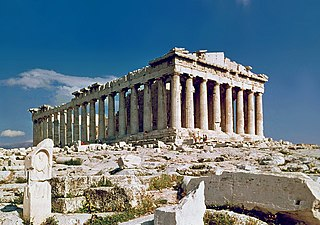
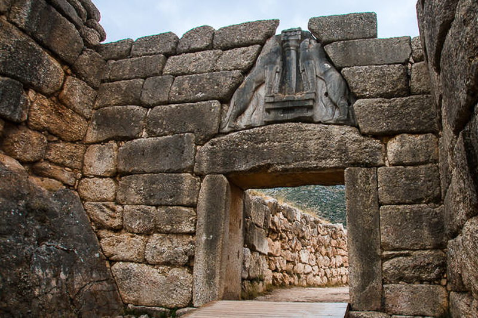
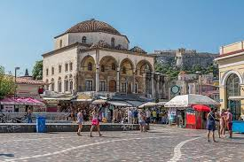

Some major landmarks we encourage you to visit

Parthenon, Athens. This temple, consecrated to Athena, is likely the most famous monument in all of Greece

Lion Gate, Mycenae. The monumental gate of this ancient city is so massive that legend says it was built by Cyclops

Monastiraki Square, Athens. One of the main hubs of the city

Akrotiri. This archaeological site in Santorini is remarkable because of its paintings